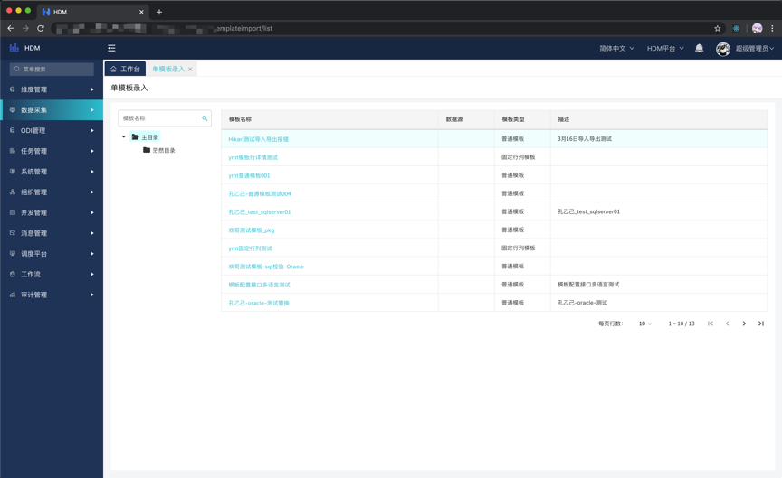

数据采集
数据录入功能是HDM的核心功能，HDM中其他功能大部分都是为了辅助生成和展示表单并实现逻辑。单数据录入界面展示了当前用户有权限的全部表单，表达根据目录层级分类。提供模糊查询。多模板录入提供了多模板数据的导入，可以根据导出的模板编写数据并实现导入，这里值得注意的是导入的三种形式: 更新、追加、替换。我们对于固定行列模板，仅允许更新，普通模板都可以，关于这三种形式请参考模板定义。
入口: 数据采集-数据录入-单模板录入
单模板录入指的是在一个模板下录入数据，界面分为左右两块，左边是定义好的模板目录，模板目录当且仅当有有权限的模板时才会显示，右边是挂在当前目录下的有权限的模板。单模板录入有两种类型，一个是普通模板，一个是固定行列模板。普通模板可以新增行去录入数据，在原HDM的基础上，我们新增了多表头和冻结列，使得普通模板更加多样化。普通模板界面和功能如图:

基本功能和原HDM保持一致，可以在界面执行ODI、计算程序、提交审批流、excel数据导入，按照不同组合展示和保存数据。普通模板的界面也可以显示多表头了，也可以选择冻结列，数据的多语言也加入其中，只要是文本列的都可以维护多语言，这既带来了方便，也带来了维护的代价，比如界面需要维护多语言、选择表或者视图的时候需要额外的多语言表，这个会在后边详细介绍。值得一提的是，导出数据大于一万条时，我们会采用任务台和下载链接的形式，而不是直接下载，需要大家注意。
入口: 数据采集-数据录入-多模板录入
多模板录入指的是在一个Excel模板下导入多个模板的数据，功能尚未完善。
模板管理模块包含了定义一个模板所需要的大部分，ODI的定义在ODI模块，请参考ODI模块。模板功能主要有: 模板目录、普通模板、固定行列模板、冻结列、多表头、个性化导入导出、数据多语言、值集列、列校验、计算程序配置执行、工作流、ODI配置执行等。
入口: 数据采集-模板管理-模板目录
模板目录就是在单模板录入界面下显示的目录层级结构，可以通过新建的方式创建，也可以直接通过导入的形式。
入口: 数据采集-模板管理-模板定义
模板定义是单模板数据录入的模板主体，也是多模板数据录入的模板。在模板定义下，可以维护和配置模板的全部属性，详情见下图和普通、固定模板。
名称: 模板的名称。
描述: 模板的描述，作为模板的指示显示在模板右上侧问号处。
主目录: 选择维护的模板目录。
模板类型: 普通模板/固定行列模板。
创建类型: 自定义/数据库选择表/数据库选择视图
1. 自定义: 系统自动创建表，DDL的操作都交由系统来。
2. 数据库选择表: 选择自己定义在数据源中的表，HDM支持多数据源，可以在多数据源下选择不同的表。此方式可以选择展现视图。
3. 数据库选择视图: 直接从数据库选择视图展示，表数据只读。
数据库表/视图: 自定义的表或者从数据源选择的表或者视图。
展现视图: 选择从数据库选择表后可以选择的展现视图，展现视图是对原表的补充。
处理模式: 其实就是导入数据的导入模式，分为更新/替换/追加
1. 更新: 主键相同的情况下，数据会更新，否则就插入
2. 替换: 先清空当前模板当前组合下的数据，然后再全部插入
3. 追加: 只插入
组合: 选择定义好的组合。
工作流: 选择定义好的工作流。
序号: 整数，模板展示顺序会按照序号排序
点开普通模板的详情，如下图。普通模板中必须维护至少一个有效的列。值集验证、SQL验证、计算程序配置、ODI接口配置均为选择已经维护好的各程序，这里不多介绍，维护后便可在前台选择或者自动运行。
值集验证: 给模板列限定选择范围，选择后，列的值只能选择，不能手动录入其他数据。值集使用的是在维度管理中定义的值集。此处可选择验证的字段为编码/别名。
SQL验证: 对模板指定列做自定义校验，根据所编写的计算程序来返回成功与否，详细demo请参考常见系统表创建。序号表示执行顺序，参数可以固定塞入值，可以用于配置固定的一些数据等信息。
计算程序配置: 可以选择在配置处定义好的计算程序，通过选择运行方式和序号，可以确定计算程序的执行方式，参数同SQL验证。
ODI接口配置: 接入配置好的ODI程序。
固定模板和普通模板的不同点就在于固定行列模板多了模板行详情，这也就意味着固定行列模板至少维护一个冻结列。我们只需要维护固定行数据的序号、是否只读、数据后，就可以得到完整的固定行列模板了，其他用法和普通模板一致。
入口: 数据采集-模板管理-模板权限
根据用户组分配模板的权限，使用方式和其他权限的类似。
无: 该用户组对此模板无权限。
只读: 该用户组对此模板只读。
写: 该用户组对此模板拥有写权限。当且仅当拥有写权限时，才会拥有ODI、计算程序等执行权限。
1. 新建: 拥有新建权限
2. 删除: 拥有删除、全部删除权限
该目录下提供了计算程序配置、SQL校验。系统模板中使用的程序均由此配置。其中计算程序可以配置直接执行，拥有权限的用户可以直接在页面执行。
入口: 数据采集-程序管理-计算程序配置
新建前需要先在对应数据源中提供好对应的计算程序，准备好后方可创建。关于系统计算程序的创建请参考常见系统表创建。
名称: 计算程序前端显示的名称。
数据源: 计算程序所在的数据源。
编码: 数据库中计算程序的编码。
描述: 对计算程序的描述。
序号: 计算程序展示顺序。
单独运行: 是/否。选择否的话即可在模板处选择。
入口: 数据采集-程序管理-计算程序运行
选择可以直接运行且拥有权限的计算程序运行。
入口: 数据采集-程序管理-计算程序权限
权限分配和其他权限类似。这里是直接授权，即拥有执行和查看权限。值得一提的是，如果用户未拥有此计算程序权限，但是此计算程序被配置在模板中且为保存后即运行，那么该用户操作模板的时候，也会执行该计算程序。
入口: 数据采集-程序管理-
SQL校验
新建前需要先在对应数据源中提供好对应的SQL校验，准备好后方可创建。关于系统SQL校验的创建请参考常见系统表创建。